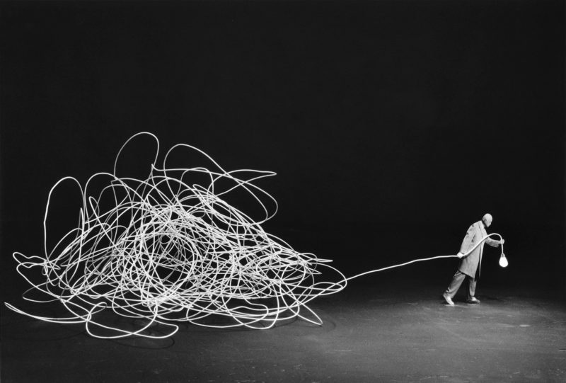

Chamss Bachiri
En reprise d'études en master de physique. Je suis passionné par la physique fondamentale, et plus particulièrement sur l'unification de la théorie quantique et de la relativité générale
PhysiqueSciencesSimulationsProjetsPodcasts
Ce site rassemble ce que j'aime, ce que j'apprends et ce que je construis : des simulations pour rendre visibles des idées de physique, des notes sur les sujets qui m'occupent, et mes projets personnels.

Derniers ajouts
- Alice et Bob n'ont plus le même âge : le vrai sens du temps propre
- Les cigares de Gamow : quand le désaccord devient visible
- Le laser, ou comment obliger la lumière à marcher au pas
- L'effet Doppler, de la sirène des pompiers aux galaxies
- Comment on a mesuré les réglages de l'Univers
- Manuel pour peser un atome (balance non fournie)
- Les étoiles doubles interdisent d'aller plus vite que la lumière
- Couper un aimant en deux pour séparer le pôle nord du pôle sud
- L'homme qui ricochait
- La chronique de physique, le podcast